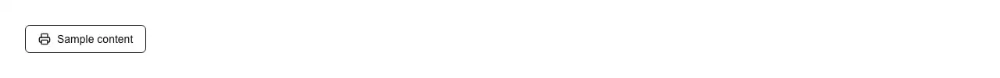

Prints one region of the page — an invoice, a receipt, an order confirmation, a ticket or boarding pass, a packing slip, a report or dashboard panel, a chart, a table, a quote or estimate, an itinerary, a certificate, a prescription, a shipping label, a résumé, or a card carrying a generated QR code — instead of printing the page it happens to be sitting on. Common asks it answers: 'react print component', 'print div react', 'print only part of the page', 'print specific div react', 'window.print prints whole page', 'react-to-print alternative', 'print button shadcn', 'print invoice react', 'print receipt component', 'save as pdf button react', 'print styles missing react', 'printed div has no css', 'canvas blank when printed', 'form values empty when printed', 'background color not printing', 'print preview cuts off scrollable div', 'how to detect print finished react', '@media print react component'. shadcn/ui has nothing here at all: window.print, beforeprint, afterprint, @media print and print-color-adjust each appear exactly zero times across the whole 255KB of component source its registry serves, so this gets written inline every time. Not to be confused with pulld recovery-codes, which builds a sheet of its own out of data you hand it and is the right choice for backup codes; this one copies a region of the live page, styles and all. The inline version has two shapes and both are wrong. onClick={() => window.print()} prints the document — nav, sidebar, cookie banner — and clips a scrolling panel to whatever was scrolled into view. The fix usually reached for next is a global @media print rule that hides everything except one class, which puts a layout concern into app-wide CSS and breaks the next time the markup moves. This clones the region into an off-screen document instead, and the details that make that hold up are the ones a hand-rolled version leaves out. Styles do not come with a clone, so the page's own are carried over: link elements are re-linked by href rather than serialised, because reading cssRules on a cross-origin sheet — a font service, a CDN build — throws SecurityError and silently drops exactly the stylesheets you cannot see, while constructable adoptedStyleSheets have no href and are serialised instead. A base element is written into the head, because a srcdoc frame has no URL of its own and every relative image on the sheet would otherwise resolve against nothing. What the user typed is copied onto the clone, because value, checked and selected are properties and not attributes, so a filled-in form serialises back to the blank form it was authored as — on a sheet that looks finished. Canvases are redrawn as images, because cloneNode copies the element and not the bitmap, and a chart, a sparkline or a captured signature otherwise prints as white space; a tainted canvas loses its own picture rather than the sheet. print-color-adjust is forced on, because browsers drop background colours and a colour-coded table prints white on white. Scroll boxes are unclipped, because a panel keeps its height on paper and everything below its fold is simply absent. The frame recipe is the rest of it: 0x0 and transparent rather than display:none (a frame that is not displayed prints a blank page), srcdoc assigned before insertion so the only load event is the sheet's rather than the initial about:blank, printing on that load event because it is what waits for the copied stylesheets, a 3s bound on that wait so one unreachable CDN cannot leave the button doing nothing forever, and teardown on afterprint rather than on the next line, because print() blocks in Chrome and Firefox but returns immediately in Safari where removing the frame would cancel a dialog still open. The API: target is a ref to the region, documentTitle becomes the sheet's title and therefore the default filename under Save as PDF, pageStyle appends CSS after the built-in rules so you can override them, onBeforePrint fires before serialisation (expand rows, reveal detail), and onPrintEnd reports 'done' | 'unavailable' | 'failed'. That outcome is deliberately not 'printed': afterprint fires for a cancelled dialog exactly as it does for a finished job, and every 'mark as printed' flag built on it eventually lies, so this one refuses to claim more than the browser said. type='button' so it will not submit a surrounding form, the state is announced through an sr-only aria-live region, the icon is aria-hidden, the button disables itself while a sheet is being prepared so a second click cannot open a second dialog, and the reset timer is cleared on unmount. Nothing rendered depends on feature detection, only what the click does, so the server and the first client render agree and there is no hydration mismatch. Styled with shadcn tokens (input, accent, ring) for light and dark, className merges rather than fights, focus ring is focus-visible. One file, one lucide icon, no print library.

Rendered on the shadcn default neutral palette with harness-generated props.
pnpm dlx shadcn@4.21.0 add @pulld/print-button
| licence | POINTER |
|---|---|
| primitive base | none |
| type | registry:ui |
| files | src/components/ui/print-button.tsx |
| npm deps pulled | none beyond the pre-installed peer set |
| registry deps | — |
| semantic / palette / hex | 4 / 0 / 1 |
| writes shared ui/ | yes — can overwrite the project’s own primitives |